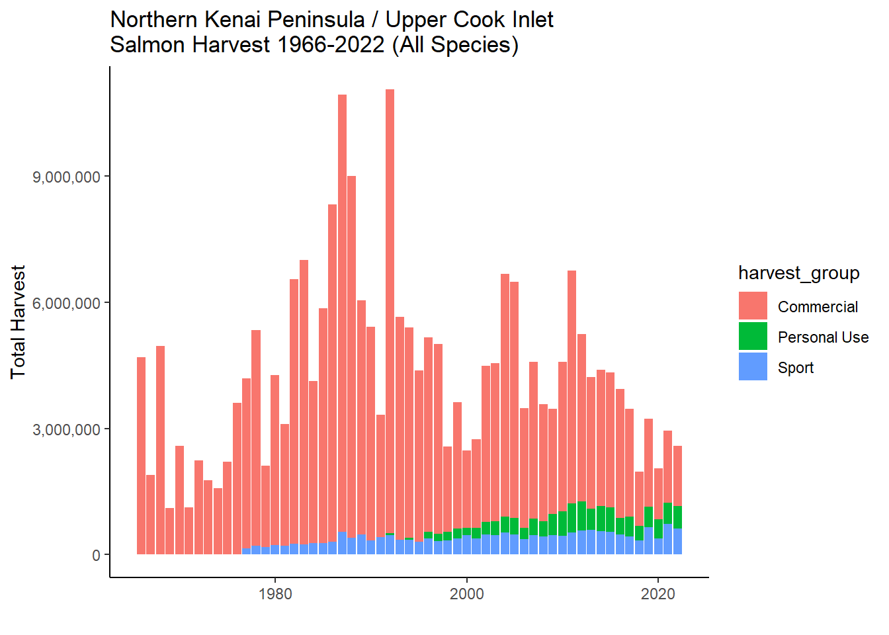

Warning: package 'ggplot2' was built under R version 4.3.3
2 Data Sources
2.1 Geographical Areas
–> may be necessary to wipe .bib file to correct author citation formats
Note on data sources for Northern Kenai Peninsula Fisheries Harvest, adapted from (Schoen et al. 2017) supplemental materials:
Harvest and effort data are reported differently for the commercial, recreational, and personal-use fisheries in Upper Cook Inlet, such that it is not possible to calculate the harvest and effort of salmon produced specifically by the Kenai or Kasilof Rivers (including their tributaries) by each fishing sector. To make comparisons within a common geographic area, we aggregated harvest and effort data from the northern Kenai Peninsula, ranging from the Kasilof River in the south to Ingram Creek in the north. The Kenai River is the predominant salmon-producing river in this area.
We aggregated harvest and effort data from the following fisheries:
Personal-use: Kenai River dip net, Kasilof River dip net, and Kasilof River set net (Fall et al. 2015; Shields and Dupuis 2016). ADF&G also reports harvest and effort for an “unknown” personal-use fishery in Upper Cook Inlet. This harvest and effort was reported on permits on which the fishery was left blank. We allocated this harvest and effort to each known fishery based on the proportions of accurately reported harvest and effort in each year.
2.2 Plots
We visualized the total salmon harvest by fishery in the Upper Cook Inlet / Northern Kenai Peninsula Management Area in Figure 2.1.

Figure 2.1: Test test test
2.3 Commercial Harvest
2.4 Personal Use Harvest
Warning: Removed 61 rows containing missing values or values outside the scale range
(`geom_bar()`).
Joining with `by = join_by(year, harvest_group)`
Warning: Using `size` aesthetic for lines was deprecated in ggplot2 3.4.0.
ℹ Please use `linewidth` instead.
Removed 61 rows containing missing values or values outside the scale range
(`geom_bar()`).
Warning: Removed 80 rows containing missing values or values outside the scale range
(`geom_line()`).
Warning: Removed 16 rows containing missing values or values outside the scale range
(`geom_line()`).
Warning: Removed 16 rows containing missing values or values outside the scale range
(`geom_line()`).
Warning: Removed 61 rows containing missing values or values outside the scale range
(`geom_bar()`).
2.5 Sport Harvest
Scale for y is already present.
Adding another scale for y, which will replace the existing scale.
Joining with `by = join_by(year)`
Scale for y is already present.
Adding another scale for y, which will replace the existing scale.
Warning: Removed 6 rows containing missing values or values outside the scale range
(`geom_bar()`).
Next:
find commercial effort data
map fig(s) to indicate where data is sourced from
match stack colors to original fig
match stack order to legend order
explanatory text (comm has longest time series, etc)
diff colors for fig 1 than any other used
representative pictures of each fishery
Idea for NEW overall fig - stacked bar plot of harvest by fishery (& sub stack by species?) superimposed with total harvest … can visualize remaining escapement in context of harvest. –> might be hard to do becuase the above figures do not include solely kenai fish
place citations/sources for data below each plot
See p 91 in lipka & stumpf 2024, all uci sockeye harvests combined
plan - draft for sport and pu; send to anna, as for effort data for comm
Schoen, Erik R, Mark S Wipfli, E Jamie Trammell, Daniel J Rinella, Angelica L Floyd, Jess Grunblatt, Molly D McCarthy, et al. 2017. “Future of Pacific Salmon in the Face of Environmental Change: Lessons from One of the World’s Remaining Productive Salmon Regions.”Fisheries 42 (10): 538–53. https://doi.org/10.1080/03632415.2017.1374251.
# Data Sources---execute: echo: falsedate: "`r Sys.Date()`"format: html: code-fold: true code-tools: true code-summary: "Show the code"---```{r, echo = F, message = F}#| warning: false#| message: false# clear environmentrm(list=ls())# load packageslibrary(tidyverse)library(janitor)library(scales)library(magrittr)library(gridExtra)```# Data Sources```{r echo = F}# harvest trends datasets 1966-2015# https://catalog.epscor.alaska.edu/dataset/commercial-recreational-and-personal-use-harvest-trends-in-the-kenai-river-salmon-fishery-1966-2015# overall run trends datasets 1976-2015# https://catalog.epscor.alaska.edu/dataset/total-run-sizes-of-chinook-and-sockeye-salmon-in-the-kenai-river-1976-2015```## Geographical Areas--\> may be necessary to wipe .bib file to correct author citation formatsNote on data sources for Northern Kenai Peninsula Fisheries Harvest, adapted from [@schoen2017] supplemental materials:Harvest and effort data are reported differently for the commercial, recreational, and personal-use fisheries in Upper Cook Inlet, such that it is not possible to calculate the harvest and effort of salmon produced specifically by the Kenai or Kasilof Rivers (including their tributaries) by each fishing sector. To make comparisons within a common geographic area, we aggregated harvest and effort data from the northern Kenai Peninsula, ranging from the Kasilof River in the south to Ingram Creek in the north. The Kenai River is the predominant salmon-producing river in this area.We aggregated harvest and effort data from the following fisheries:- Commercial: Central District drift gill net and east-side set gill net [@lipkacolton2024; @shields2017]- Recreational: Northern Kenai Peninsula Management Area [@begich2013; @gatesjennyl2024]- Personal-use: Kenai River dip net, Kasilof River dip net, and Kasilof River set net (Fall et al. 2015; Shields and Dupuis 2016). ADF&G also reports harvest and effort for an “unknown” personal-use fishery in Upper Cook Inlet. This harvest and effort was reported on permits on which the fishery was left blank. We allocated this harvest and effort to each known fishery based on the proportions of accurately reported harvest and effort in each year.<br>```{r echo = F, include = F}# Read in Data### commercial# read in comm fish datadir <- "other/input/harvest_trends/uci-commercial-salmon-harvest.csv"uci_comm <- read.csv(dir) %>% clean_names() %>% # remove percentage columns select(-contains(("_2")),-drift,-essn,-wssn,-nsn,-reference,-link,-page) %>% mutate(harvest_group = "Commercial") %>% transform(year = as.character(year)) %>% rename(total_count = total)# the commercial harvest time series is the longest, so we will make that the axis extent for the other figures toocomm_year_min <- as.numeric(min(uci_comm$year))comm_year_max <- as.numeric(max(uci_comm$year))# for some visualization purposes, we want the y-axis to show the scale of the largest harvest category, commercial. Species are aggregated# comm_harvest_min <- group_by(year) %>% summarise(total_comm_harvest = sum(total_ct)) # throws error#comm_harvest_max### personal use## Personal Use Harvest# read in pre 1996 PUdir <- "other/input/harvest_trends/puharvest_pre1996.csv"puharvest_pre1996 <- read.csv(dir) %>% clean_names() %>% # prep format pivot_longer(cols = c("harvest_sockeye", "harvest_chinook", "harvest_coho", "harvest_chum", "harvest_pink"), names_to = "species", values_to = "count") %>% select(-harvest_total) %>% # corrected species names mutate(species = case_when( species == "harvest_sockeye" ~ "Sockeye", species == "harvest_chinook" ~ "Chinook", species == "harvest_chum" ~ "Chum", species == "harvest_pink" ~ "Pink", species == "harvest_coho" ~ "Coho")) %>% # consolidate data among fisheries, as the figure does not segregate them group_by(species, year) %>% summarise(total_count = sum(count)) %>% transform(year = as.character(year))# read in post 1996 PUdir <- "other/input/harvest_trends/puharvest_post1996.csv"puharvest_post1996 <- read.csv(dir) %>% clean_names() %>% select(-source,-page) %>% # remove commas mutate_all(~sub(",","",.)) %>% # prep format pivot_longer(cols = c("fish_cr", "kasilof_set", "kasilof_dip", "kenai", "unknown"), names_to = "fishery", values_to = "count") %>% transform(count = as.numeric(count)) %>% select(-fishery) %>% # replace all 0 with NA mutate(count = na_if(count,0)) %>% group_by(species, year) %>% # recall to include na.rm = T summarise(total_count = sum(count, na.rm = T)) # combine pre-1996 and post-1996 PU datauci_pu <- bind_rows(puharvest_pre1996,puharvest_post1996) %>% mutate(harvest_group = "Personal Use") # add secondary axis# suggested alternative: secondary chart below w/ household days# number format on y axis# capitalize legend# reverse stack order# match colors# secondary y-axis## Sport Harvest# read in uci sport fish datadir <- "other/input/harvest_trends/sportharvest.csv"uci_sport <- read.csv(dir) %>% clean_names() %>% select(contains(c("year","area","salmon","trout","dolly","grayling","pike","other"))) %>% # consolidate all non-salmon species into "other" rowwise() %>% mutate(other = sum(rainbow_trout, lake_trout, dolly_varden, arctic_grayling, northern_pike, other, na.rm = T)) %>% # remove non-salmon species columns select(-rainbow_trout, -lake_trout, -dolly_varden,-arctic_grayling,-northern_pike) %>% pivot_longer(cols = contains(c("salmon","other")), names_to = "species", values_to = "count") %>% # consolidate counts from various fisheries into overall sport fishery group_by(year,species) %>% summarise(total_count = sum(count)) %>% # fix species names mutate(species = case_when( species == "chinook_salmon" ~ "Chinook", species == "chum_salmon" ~ "Chum", species == "coho_salmon" ~ "Coho", species == "pink_salmon" ~ "Pink", species == "sockeye_salmon" ~ "Sockeye", species == "other" ~ "Other")) %>% # name user group mutate(harvest_group = "Sport") %>% transform(year = as.character(year))#### combine commercial, PU, and sport into single dataframe# combine dataframes for comm, pu, and sportdat <- bind_rows(uci_comm, uci_pu, uci_sport)```## PlotsWe visualized the total salmon harvest by fishery in the Upper Cook Inlet / Northern Kenai Peninsula Management Area in @fig-harvest-group.```{r echo = F, message = F, warning = F}#| label: fig-harvest-group#| fig-cap: "Test test test"# horizontal faceted plotdat %>% transform(year = as.numeric(year)) %>% filter(year < 2023) %>% group_by(year,harvest_group) %>% summarise(total_harvest = sum(total_count)) %>% ggplot() + geom_bar(aes(x = year, y = total_harvest, fill = harvest_group), stat = "identity") + scale_y_continuous(labels = label_comma()) + theme_classic() + xlab("") + ylab("Total Harvest") + ggtitle("Northern Kenai Peninsula / Upper Cook Inlet\nSalmon Harvest 1966-2022 (All Species)") # report/include numbers for educational / traditional use; make point not big enough to plot here# plots of value / size``````{r echo = F, message = F, include = F}# what percentage of the overall UCI harvest is by each fishery?dat_pct <- dat %>% group_by(harvest_group,year) %>% summarise(harvest_sum = sum(total_count)) %>% pivot_wider(names_from = harvest_group, values_from = harvest_sum) %>% clean_names() %>% mutate(tot = commercial + personal_use + sport) %>% mutate(commercial_pct = commercial/tot, personal_use_pct = personal_use/tot, sport_pct = sport/tot) %>% mutate(personal_and_sport_pct = personal_use_pct + sport_pct)```## Commercial Harvest```{r echo = F}# comm plotcomm_fig <- uci_comm %>% ggplot() + geom_bar(aes(x = as.numeric(year), y = total_count, fill = species), stat = "identity", position = position_stack(reverse = T)) + scale_y_continuous(labels = label_comma()) + xlab("") + ylab("Commercial Harvest") + theme_classic() + ggtitle("Upper Cook Inlet Commercial Harvest")comm_fig# need clarification on and source for effort: number of permits fished. where; both setnet and drift?? check against shields and dupuis and find parallel in lipke & stumpf 2024# plot v2 with effort on seperate axis when available```<br>## Personal Use Harvest```{r echo = F}# PU plot v1pu_fig <- uci_pu %>% filter(species != "HouseholdDaysFished") %>% ggplot() + geom_bar(aes(x = as.numeric(year), y = total_count, fill = species), stat = "identity", position = position_stack(reverse = T)) + scale_y_continuous(labels = label_comma()) + xlab("") + ylab("Total Salmon Harvest") + xlim(comm_year_min,comm_year_max) + theme_classic() + theme(legend.position = "none") pu_fig# PU plot v2: add secondary axis# 1) get effort data in new columnuci_pu2 <- uci_pu %>% filter(species == "HouseholdDaysFished") %>% select(-species)colnames(uci_pu2) <- c("year","household_days_fished","harvest_group")uci_pu2 <- left_join(uci_pu,uci_pu2) %>% filter(species != "HouseholdDaysFished")# PU plot v2scale_factor <- 16pu_fig2 <- uci_pu2 %>% filter(species != "HouseholdDaysFished") %>% ggplot() + geom_bar(aes(x = as.numeric(year), y = total_count, fill = species), stat = "identity", position = position_stack(reverse = T)) + geom_line(aes(x = as.numeric(year), y = household_days_fished * scale_factor), color = "black", size = 1.05) + scale_y_continuous(name = "Personal Use Harvest", sec.axis = sec_axis(~ ., labels = number_format(scale=1/scale_factor), name="Effort (Household Days Fished)"), labels = comma) + xlab("") + ylab("Personal Use Harvest") + xlim(comm_year_min,comm_year_max) + theme_classic() + ggtitle("Northern Kenai Peninsula Personal Use Salmon Fishery")pu_fig2# PU effort vs timepu_effort <- uci_pu2 %>% select(-species,-total_count) %>% distinct() %>% ggplot() + geom_line(aes(as.numeric(year),household_days_fished, group = 1), size = 2) + scale_y_continuous(labels = label_comma()) + xlab("") + ylab("Household Days Fished") + xlim(comm_year_min,comm_year_max) + theme_classic() + ggtitle("Upper Cook Inlet\nPersonal Use Salmon Harvest")pu_effort# arrange two plots atopgrid.arrange(pu_effort, pu_fig)# capitalize legend# reverse stack order# match colors# see how this looks as a faceted plot with effort on top ?# how does this plot look against sc ak population trend?# personal use = dipnet + setnet# pu effort records not available prior to 1996# break this down also by type /location of PU fishery ...```<br>## Sport Harvest```{r echo = F}# sport plotsport_fig <- uci_sport %>% ggplot() + geom_bar(aes(x = as.numeric(year), y = total_count, fill = species), stat = "identity",position = position_stack(reverse = T)) + scale_y_continuous(labels = comma) + xlab("") + ylab("Sport Harvest") + xlim(comm_year_min,comm_year_max) + ylim(0,800000) + theme_classic()#sport_fig# plot sport v2 with effort# add effort datasport_effort <- read.csv("other/input/harvest_trends/sportharvest_effort.csv") %>% clean_names() %>% select(year,kenai_river_total) %>% rename(angler_days = kenai_river_total) %>% # remove commas mutate_all(~sub(",","",.)) %>% transform(angler_days = as.numeric(angler_days), year = as.character(year))# joinuci_sport2 <- left_join(uci_sport,sport_effort)# plotscale_factor <- 2sport_fig2 <- uci_sport2 %>% filter(species != "angler_days") %>% ggplot() + geom_bar(aes(x = as.numeric(year), y = total_count, fill = species), stat = "identity", position = position_stack(reverse = T)) + geom_line(aes(x = as.numeric(year), y = angler_days * scale_factor), color = "black", size = 1.05) + scale_y_continuous(name = "Sport Harvest", sec.axis = sec_axis(~ ., labels = number_format(scale=1/scale_factor), name="Effort (Angler Days)"), labels = comma) + xlab("") + ylab("Sport Harvest") + xlim(comm_year_min,comm_year_max) + scale_y_continuous(labels = label_comma()) + theme_classic() + ggtitle("Upper Cook Inlet Freshwater Sport Fisheries")sport_fig2# y axis for number of angler days is missing```Next:- find commercial effort data- map fig(s) to indicate where data is sourced from- match stack colors to original fig- match stack order to legend order- explanatory text (comm has longest time series, etc)- diff colors for fig 1 than any other used- representative pictures of each fisheryIdea for NEW overall fig - stacked bar plot of harvest by fishery (& sub stack by species?) superimposed with total harvest ... can visualize remaining escapement in context of harvest. --\> might be hard to do becuase the above figures do not include solely kenai fish- place citations/sources for data below each plotSee p 91 in lipka & stumpf 2024, all uci sockeye harvests combinedplan - draft for sport and pu; send to anna, as for effort data for comm